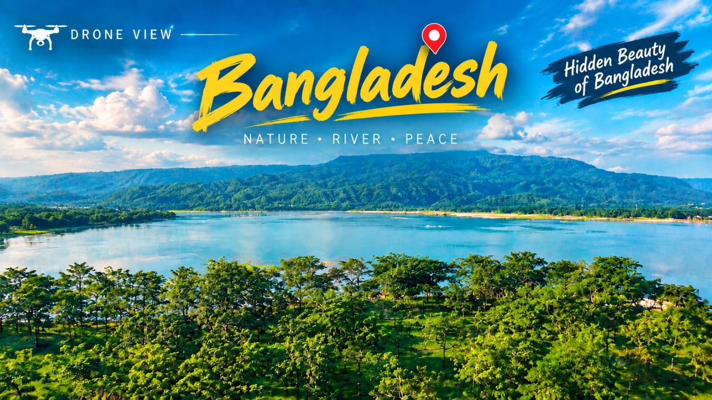
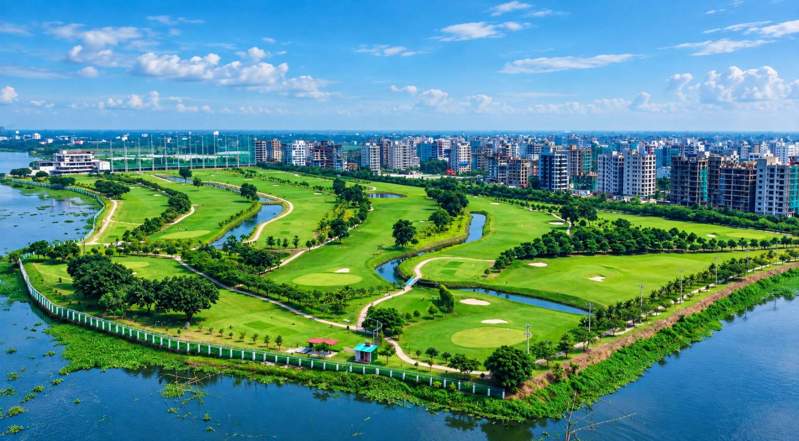

01 / AERIAL STORY
Hidden Beauty of Bangladesh
Nature • River • Peace
Cinematic aerial stories, drone films and visual moments — discovering Bangladesh from a different perspective.
A growing collection of landscapes, city views and cinematic footage created for The Urban Kite.

Nature • River • Peace

Urban geometry from a new altitude.
Original footage — optimized for web playback.
Original footage — optimized for web playback.
Five selected videos from The Urban Kite. Tap any card to watch on YouTube.
I create drone footage, cinematic videos and visual stories that turn real places into memorable experiences. The Urban Kite is my creative space for aerial filmmaking, photography and digital storytelling from Bangladesh.
For collaborations, drone projects, visual content or general enquiries, reach out directly.